AI Perception
Process sensor inputs to understand surroundings and detect obstacles.
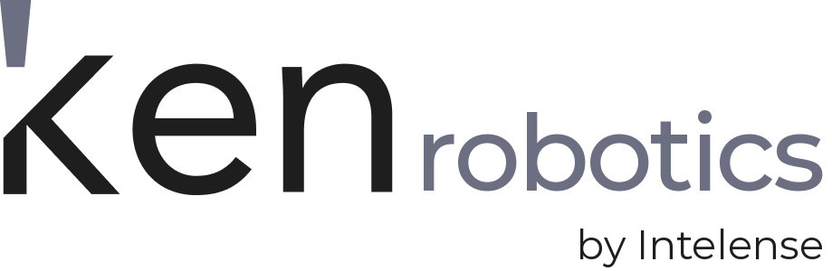
KenRobotics helps autonomous robots understand their surroundings, navigate changing environments, avoid obstacles, and coordinate tasks across robot fleets.
AI-powered perception, path planning, and fleet coordination.
R-02 slowed down near a person in aisle 4.
Simulated fleet and example data
Perception and fleet coordination slow or reroute robots when people, forklifts or obstacles enter their path.
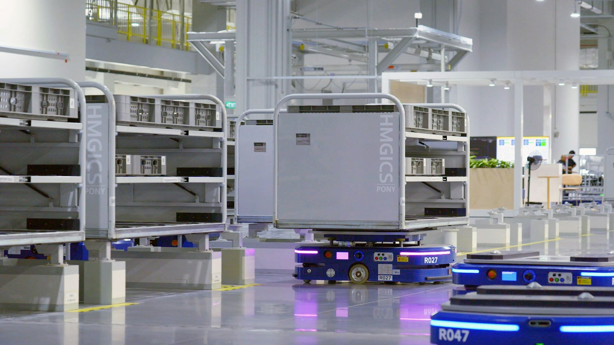
AMR · R027AMR · R047PersonAutonomous robots need more than the ability to move. They need to understand their surroundings, respond to changing conditions, and work efficiently alongside people and other machines.
KenRobotics brings AI perception, dynamic path planning, and fleet coordination together to help robots navigate real-world environments and manage operational tasks.
From warehouse robots moving goods to inspection robots operating in complex environments, KenRobotics helps teams coordinate autonomous operations more effectively.
Process sensor inputs to understand surroundings and detect obstacles.
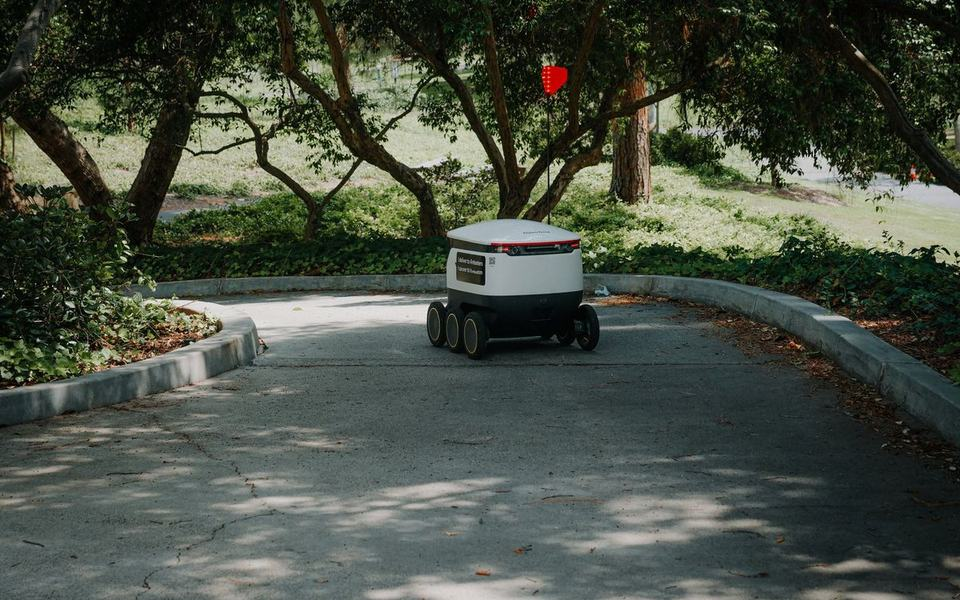
AMR · route 1Calculate routes and adapt when conditions or obstacles change.
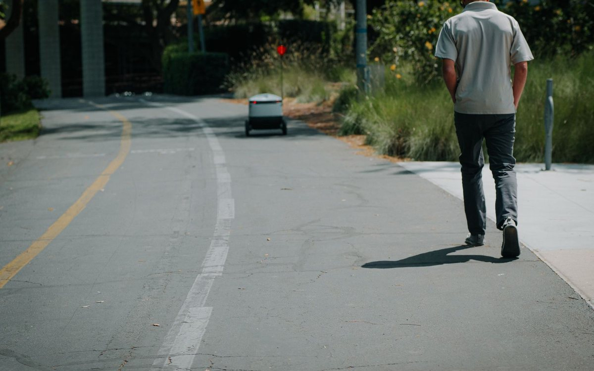
PersonHelp robots navigate around objects and respond to changing environments.
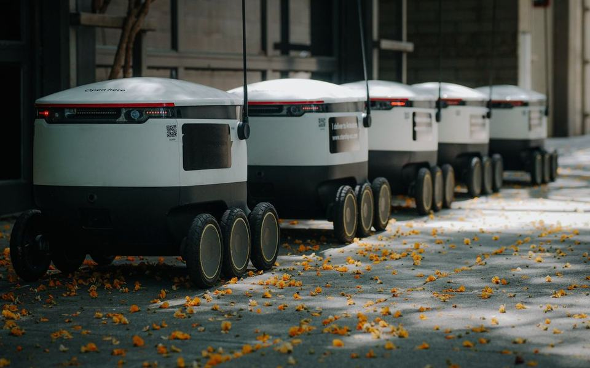
R-01R-02Coordinate tasks and movements across multiple robots.
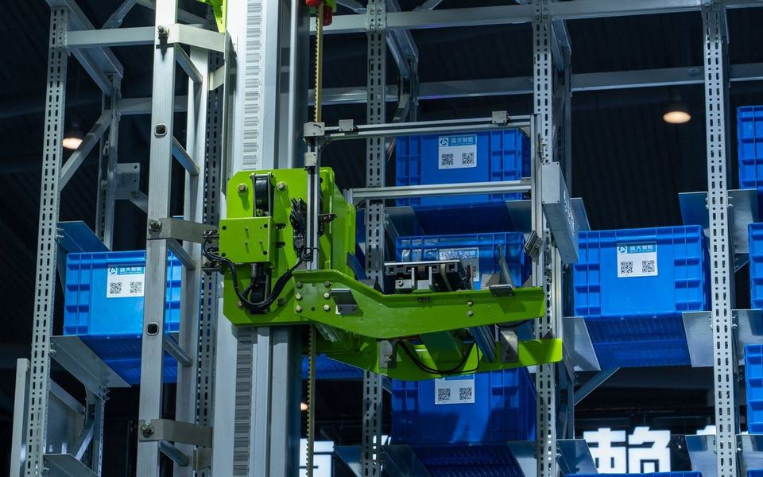
Pick · crate 14Allocate work based on operational priorities and fleet availability.
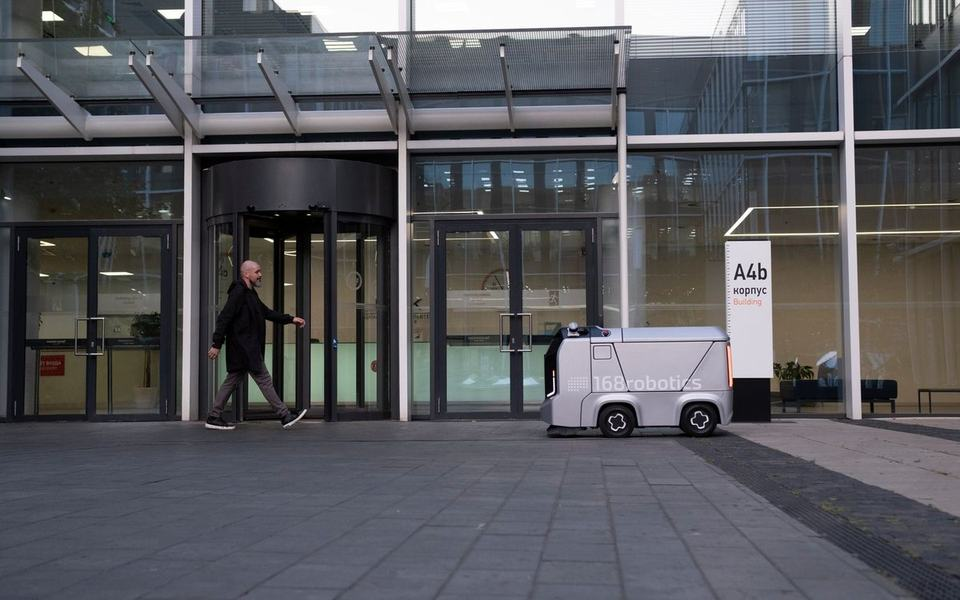
Safety zoneSupport configurable safety zones for environments shared by people and robots.
Connect compatible robot platforms through supported integrations and interfaces. Configure the environment, operating zones, and workflow requirements for your deployment.
AI processes sensor data to build an understanding of the surroundings. Robots use this information to plan routes, identify obstacles, and adapt their movements.
Coordinate tasks across connected robots, manage route conflicts, and allocate work based on operational priorities.
Monitor fleet activity and add compatible robots as operational needs grow, subject to platform and integration requirements.
Use sensor inputs to help robots interpret their surroundings and respond to changes in their operating environment.
Plan and adjust routes around obstacles, restricted areas, and changing conditions.
Help multiple robots work within the same environment while managing task allocation and movement conflicts.
Configure operating boundaries and safety rules for environments where people and robots work near one another.
Prioritise and distribute tasks across a connected fleet according to operational requirements.
Connect supported robot platforms through available SDKs and integration methods, including ROS 2 where supported.
Coordinate autonomous mobile robots for material movement, picking support, sorting, and internal logistics.
More on industrial →Support automated material handling, repetitive movement tasks, and coordination between robotic systems on production floors.
More on industrial →Support autonomous patrol, inspection, and other robotic operations in environments that require carefully configured safety and access controls.
More on public safety →Enable robotic and drone-based site inspection, surveying, and progress monitoring, depending on the platform and integration.
More on industrial →Support field robots for crop scouting, spraying, and other precision operations, with opportunities to integrate insights from KenAgri.
Explore KenAgri →More on agriculture →Support compatible autonomous systems used for internal delivery and transport tasks in healthcare facilities.
More on healthcare →Robots often operate in spaces where people, vehicles, and other machines are moving at the same time.
KenRobotics supports configurable safety zones and dynamic navigation to help robots respond to obstacles and changing conditions.
Teams can define operating areas, restricted zones, and workflow rules according to their environment and deployment requirements.
The goal is to make autonomous operations more coordinated and predictable while keeping safety requirements central to deployment planning.
Note: AI-based detection and navigation should complement, not replace, certified robot safety systems and site-specific safety procedures.
Example footage and safety zones
Integrating autonomous robotics into existing operations can involve different hardware platforms, sensors, layouts, and workflows.
KenRobotics is designed to support compatible robot platforms and integration methods, helping teams build toward coordinated fleet operations.
Integration timelines and supported capabilities depend on the robot model, hardware, and deployment requirements.
KenRobotics is an AI robotics platform designed to support robot perception, autonomous path planning, obstacle avoidance, and coordination across connected robot fleets.
Robot fleet coordination involves managing multiple robots operating in the same environment. It can include assigning tasks, managing routes, and reducing conflicts between robots.
KenRobotics is designed to integrate with compatible robot platforms. Support depends on the robot hardware, available interfaces, and integration requirements.
ROS 2 is a software framework commonly used to build robotics applications. Where supported, ROS 2 integration can help connect robotic systems with navigation, perception, and coordination software.
The system uses sensor inputs and AI-based environment understanding to support obstacle detection and route planning. Actual performance depends on the robot's sensors, environment, and safety configuration.
Multi-platform integration depends on the available interfaces, supported robot models, and compatibility of their control systems. Contact the Intelense team to confirm support for your fleet.
KenRobotics supports configurable human-robot safety zones and navigation logic. Deployments must also use appropriate hardware-level safety mechanisms, risk assessments, and applicable safety standards.
Potential applications include warehousing, logistics, manufacturing, construction, agriculture, healthcare, and security. The available functions depend on the robot platform and deployment.
Modules share one engine and dashboard, so they combine easily.
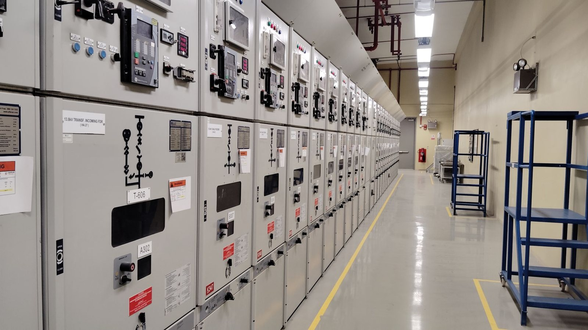
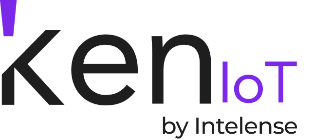
Turns data from connected sensors and equipment into real-time monitoring, anomaly detection and predictive maintenance insights.
Learn more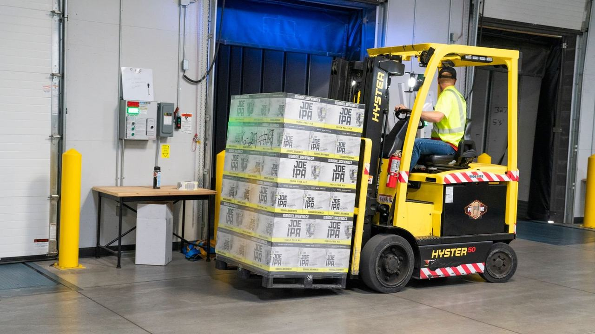

Uses AI video analytics on your existing CCTV to flag missing PPE, restricted-zone entry, human-vehicle risks, fire, smoke and falls.
Learn more
Uses AI with satellite, drone, sensor and weather data to monitor crop health, flag pests and disease, predict yields and guide irrigation.
Learn moreExplore how KenRobotics can support autonomous navigation, fleet coordination, and intelligent operations for your environment.
KenRobotics by Intelense — Intelligence for autonomous systems.